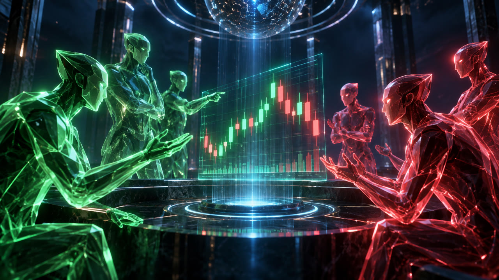
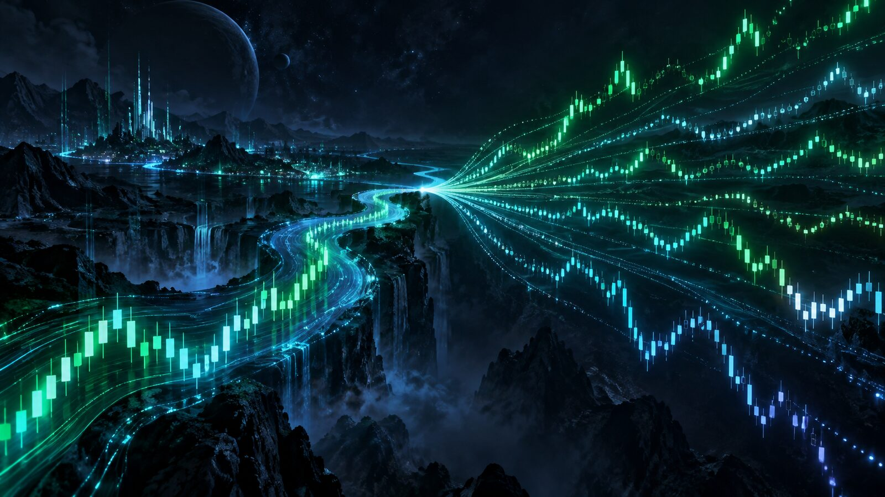

Cada oportunidade de trade precisa sobreviver a um debate a favor e contra, a portões de segurança e a um gerente de risco com poder de veto. Tudo registrado. Tudo começa na demo.
O Omni Day Trade é um sistema experimental de análise e decisão de operações. Em vez de seguir um script fixo, coloca vários agentes de IA para defender e atacar cada entrada com dados. A decisão sai de votos ponderados pelo histórico de acerto de cada agente, e o gerente de risco pode vetar qualquer coisa.
Um agente defende a entrada, outro ataca. Rodadas de réplica e um veredito de síntese.
Indicadores descartam a maioria dos candidatos antes de gastar qualquer chamada de IA.
Limites duros, pausa automática, nunca martingale, parada de emergência.
Cada decisão e resultado entra num journal. Lições alimentam os próximos debates.

O projeto cresceu em camadas. Aqui está o mapa, com o que já existe como código testado e o que ainda está em preparação.
Modelos de séries temporais e simulação de cenários entram como mais uma opinião para o debate. Nunca como oráculo.

Cada decisão pendente vira resultado e depois uma lição curta. Nos testes de backtest, só entra o que já existia na data, para não vazar o futuro.
A ideia é manter na nuvem gratuita o que ela sustenta e deixar o computador local só com o mínimo, sob comando manual.
Valor máximo por entrada e perda máxima do dia. Bateu, o motor para sozinho.
Série de perdas no limite pausa tudo automaticamente.
Nunca, em nenhuma hipótese.
Bloqueio automático durante eventos fortes.
Botão com alerta imediato no WhatsApp.
Mudar limite depois de perdas exige reflexão escrita antes.
Centenas de operações em demo antes de qualquer conclusão. Intervalo de confiança, dados separados para o teste final e comparação contra um robô aleatório. Se não superar o ponto de equilíbrio, o projeto para e reavalia.
Em construção, ainda sem operação. O motor existe como código com mais de mil testes automatizados offline. Nenhum ciclo contínuo está operando e a conta demo ainda não gerou resultados que provem alguma coisa.
Não há números de retorno aqui porque nenhum existe. Nada nesta página é promessa de lucro nem recomendação de investimento.
Opções binárias envolvem risco alto e não têm corretoras autorizadas pela CVM no Brasil. Este projeto é educacional e experimental e opera somente em conta demo.
Projeto pessoal de pesquisa e engenharia, não comercial. Idealização, direção e decisões de risco: Fábio Henrique Correa. Construção assistida por agentes de IA de código, módulo a módulo, com testes.